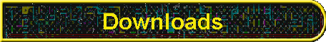

Copyright 2000-2006 by Spare Time Gizmos. All rights reserved. Last modified July 31, 2006. Send mail to webmaster@sparetimegizmos.com with questions or comments about this web site.
![[logo: three Life Game glider patterns surrounding the text "Spare Time Gizmos"]](images/logo.gif)